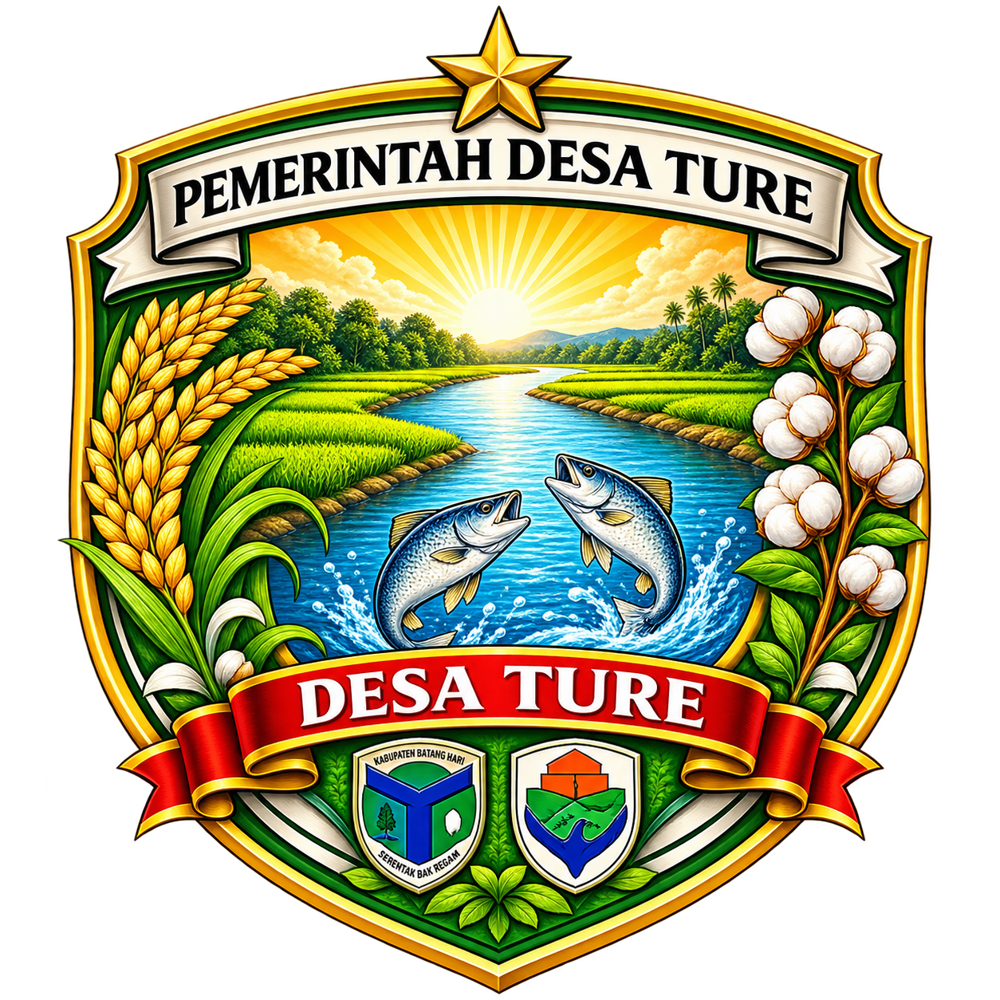

🏘️
06 September 2026
Kegiatan Pemerintahan Desa Ture
Informasi terbaru mengenai kegiatan dan pelayanan Pemerintah Desa Ture.

Portal Informasi Desa Ture
Portal informasi Desa Ture, Kecamatan Pemayung, Kabupaten Batang Hari, Provinsi Jambi. Menyajikan informasi kegiatan pemerintahan, pembangunan dan pelayanan kepada masyarakat.
Informasi terbaru mengenai kegiatan dan pelayanan Pemerintah Desa Ture.
Berbagai kegiatan masyarakat dalam mendukung sektor pertanian Desa Ture.
Informasi perkembangan pembangunan dan infrastruktur di Desa Ture.